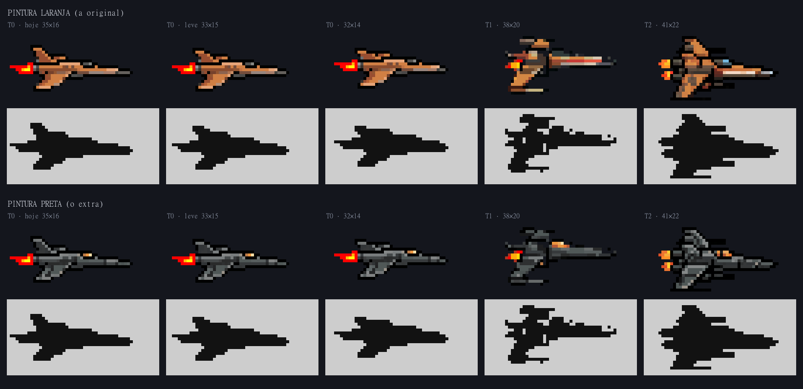
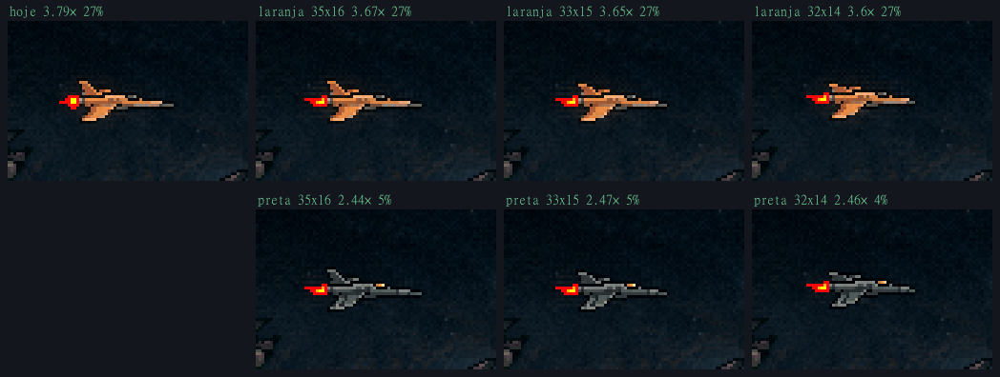
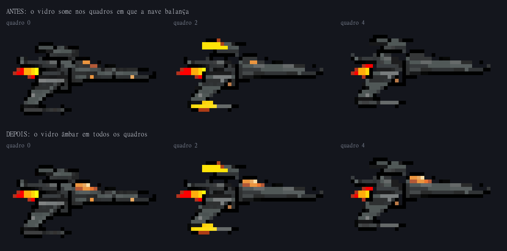
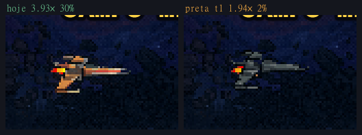
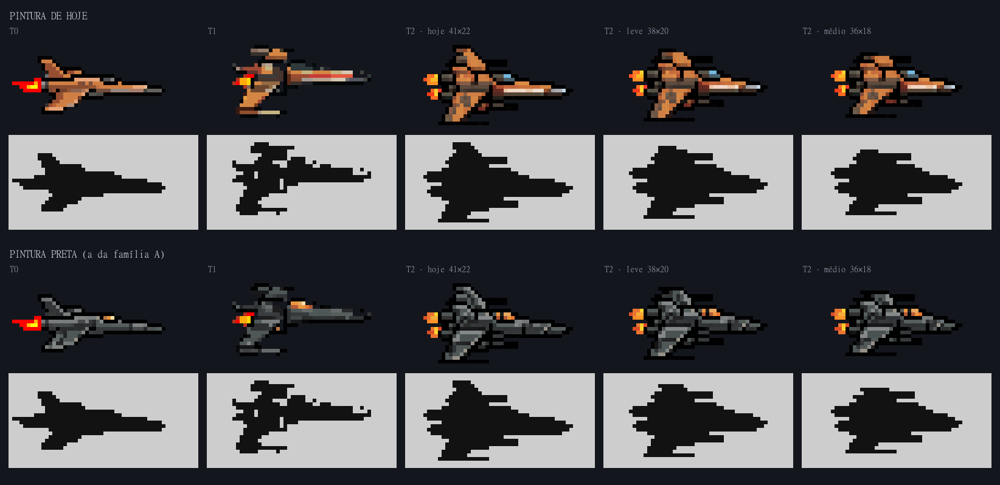
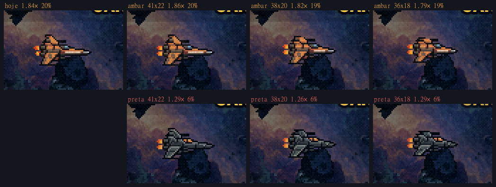
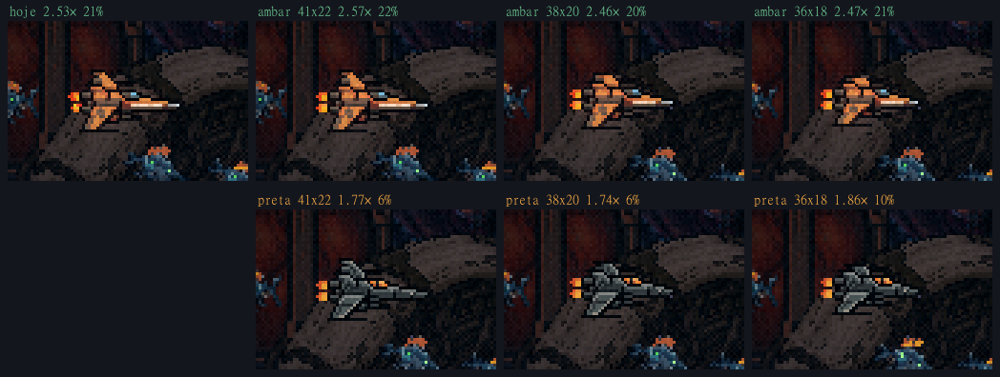

A nave de hoje, com a T0 menor (e a T3 fora)
23/10/2026 · ← as silhuetas (2a) · → os seus concepts no PixelLab ·Você disse: "ainda acho a nave humana que temos melhor", "tirar o T3 da nave humana, ele é o mais grosseiro", "a humana T2 está ok com o tamanho", "podemos diminuir de forma leve a T0" e "a pintura preta é um extra, a laranja é a original".
Já no jogo
- A humana é T0 → T1 → T2. A T2 vai até o fim, inclusive na F4 e na cena final. A T3 não carrega mais; os arquivos continuam na pasta e no git.
- As estrelas: uma fase só solta peças se a nave ainda pode evoluir. A humana no T2 cruza a F3 sem peças. A manta (T1 na Doca) continua indo para o T2 pela F3. Quem perdeu uma coleção ainda alcança o T2 numa fase seguinte.
- A T0 laranja na leve, 33×15 (era 35×16): os 17 quadros (a parada, os 8 do motor e os 8 do jato azul). A T1 e a T2 ficam como estão.
- Testado no jogo: peças e nave certas em cada fase e tier (F3 com a humana no T1: 3 peças; no T2: nenhuma; manta T1: 3; manta T2: nenhuma; F4 mostra a T2). Nenhum erro de carregamento.
Código: src/ships.ts, src/pecas.ts (podeEvoluir), src/scenes/GameScene.ts, src/scenes/BootScene.ts, src/sandbox/config.ts. Arte: public/sprites/naves/humana-t0*.png. Ainda sem commit.
A T0 menor


Como encolheu: sem escala e sem redesenho. A ferramenta tira linhas e colunas de pixels onde o pixel só repete o vizinho e onde o corte não abre degrau numa borda. Cada pixel que fica mantém a cor exata, e o mesmo corte vale para os 17 quadros, então a animação continua alinhada. A hitbox (21×9) não muda.
| T0 antes | T0 leve (instalada) | T0 32×14 | T1 | T2 | |
|---|---|---|---|---|---|
| Tamanho | 35×16 | 33×15 | 32×14 | 38×20 | 41×22 |
A leve fica quase igual, só mais enxuta, e a escada ganha um degrau mais claro até a T1. A 32×14 já amassa a aleta de cima.
A pintura preta, o extra
É a pintura da família A (casco grafite, aresta clara em cada placa, âmbar nas janelas e no motor), levada aos quadros animados da T0, da T1 e da T2:
- onde o quadro não muda, entra o pixel exato da A;
- o que se mexe passa por uma troca de cor aprendida comparando a nave de hoje com a A, pixel a pixel;
- a chama azul dos Propulsores fica como está.
Ela fica guardada como extra (naves/encolher/preta/, com a T0 em preta-t0-33x15/), sem substituir a laranja.

Duas notas: os flashes amarelos da T1 (quadros 2, 3 e 5) já existem na laranja, são as luzes que piscam com as asas; na preta eles só aparecem mais. E a preta mede menos contraste com o fundo: na F3 cai para 1,3× (a laranja tem 1,8×), segura pelo contorno e pelo âmbar.

A T2 menor (testada e recusada: ela fica no tamanho original)



O que eu preciso de você
- Confirmar a T0 leve (33×15) jogando, ou pedir a 32×14.
- Como a preta entra no jogo: guardada por enquanto, uma opção de pintura no menu ou na Doca, ou um prêmio (por exemplo, ao terminar o jogo).